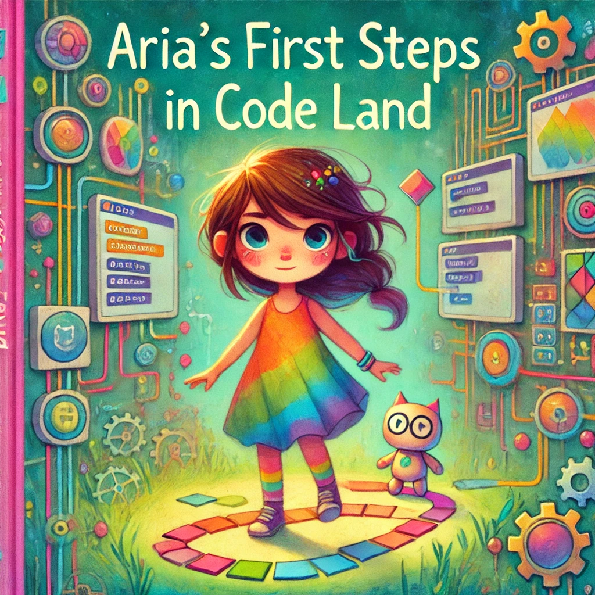
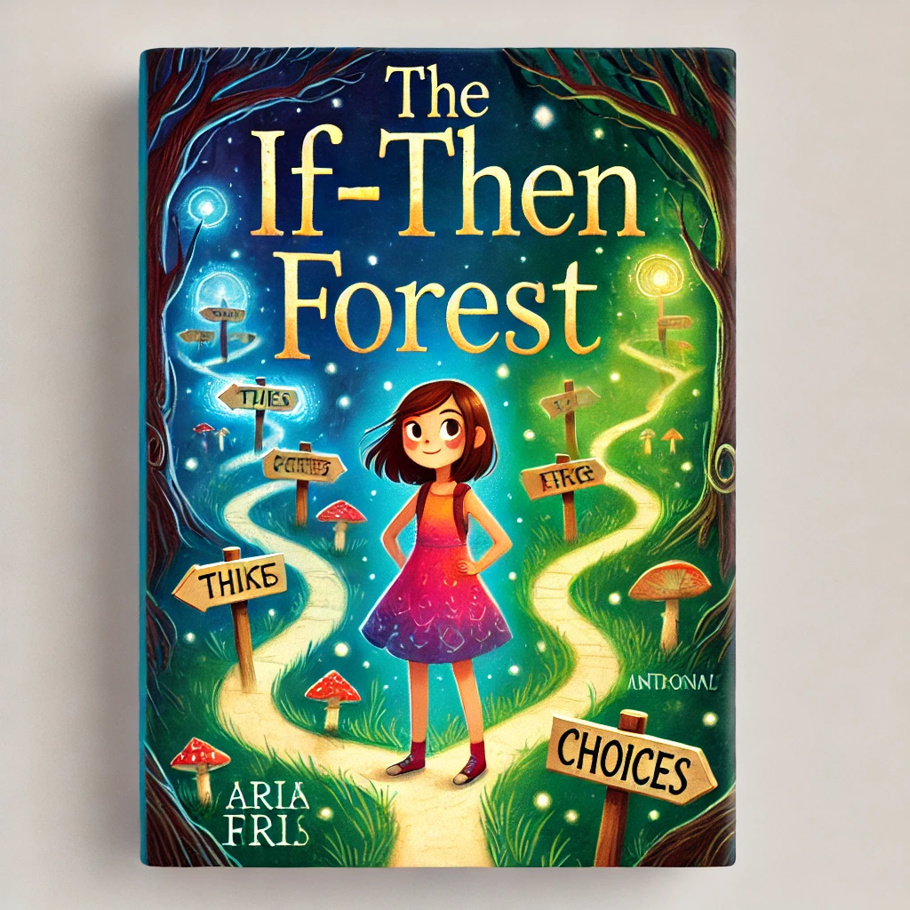

Discover Code Quest Chronicles
Join Aria, a curious 9-year-old girl, as she adventures through various scenarios,
learning basic computer science concepts. Each interactive comic book focuses on one
or two key programming ideas, building upon previous knowledge. The series uses Scratch for all coding exercises.
Each book comes in a different setting, cover specific computer science concepts,
has an interactive element and includes a real world application. You may see what each Book
of the series include below.
Book 1 - The Pixel Painter's Palette
Story: Aria finds herself in Code Land and must guide a character through a maze using simple instructions.Setting: A colorful, abstract world representing a computer's inner workingsConcepts: Basic programming instructions, SequencingInteractive Element: Create a simple sequence of commands in Scratch to move a sprite through a maze.Real-world Application: How step-by-step instructions are used in everyday technology, like digital assistants or smart home devices.

Book 2 - "The Looping Carnival
Story: Aria must help set up repeating carnival games and rides using loops.Setting: An endless carnival in a pocket dimensionConcepts: Loops (focusing on repeat loops)Interactive Element: Use Scratch to create a simple animation that repeats, like a spinning carousel.Real-world Application: How loops are used in manufacturing processes or in creating animations for movies.
Book 3 - "Variable Valley Adventure"
Story: Aria explores a world where objects can change size, color, or text. She learns to use variables to control these changes.Setting: A valley where everything can change its propertiesConcepts: Variables, Basic data types (numbers, strings)Interactive Element: Create a Scratch project where users can input values to change a character's properties.Real-world Application: How variables are used in video games to keep track of scores or in weather apps to update temperatures.
Book 4: "The If-Then Forest"
Story: Aria navigates through a forest where she must make decisions that affect her path, introducing her to if-then logic.Setting: A magical forest where paths appear based on conditionsConcepts: Conditional statements (If-Then)Interactive Element: Develop a simple choice-based story in Scratch using if-then statements.Real-world Application: How conditional statements are used in traffic lights or in recommendation systems for streaming services.

Book 5: "Function Falls"
Story: Aria learns to create and use functions to control various waterfalls in the park.Setting: A series of waterfalls, each performing a specific taskConcepts: Functions, ParametersInteractive Element: Build a Scratch project with custom blocks (Scratch's version of functions) to draw different shapes.Real-world Application: How functions are used in apps to perform specific tasks or in robotics to control different movements.
Book 6: "List Island"
Story: Aria helps islanders organize their belongings using lists, learning to add, remove, and sort items.Setting: An island where items need to be organized and sortedConcepts: Lists, Basic list operationsInteractive Element: Create a simple inventory management system in Scratch using lists.Real-world Application: How lists are used in to-do apps or in inventory systems for online stores.
Book 7: "The Debugging Dungeon"
Story: Aria must identify and fix various "bugs" to escape the dungeon, learning key debugging strategies.Setting: A mysterious dungeon filled with puzzles and glitchesConcepts: Debugging, Problem-solving strategiesInteractive Element: Debug a pre-made Scratch project with intentional errors.Real-world Application: How debugging is crucial in developing software or in maintaining complex systems like spacecraft.
Book 8: "Algorithm Amusement Park"
Story: Aria designs new rides and games using algorithms, combining all she's learned.Setting: An amusement park where rides and games operate on algorithmsConcepts: Basic algorithms (focus on sequence, selection, and iteration)Interactive Element: Develop a simple game in Scratch that uses a basic algorithm to generate challenges.Real-world Application: How algorithms are used in route-planning apps or in creating procedurally generated content in video games.